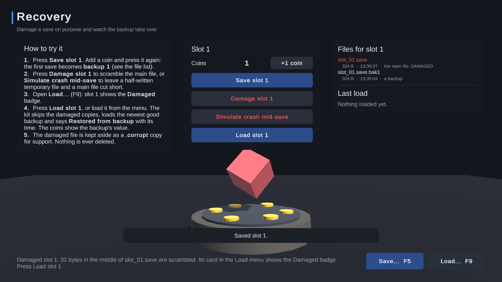
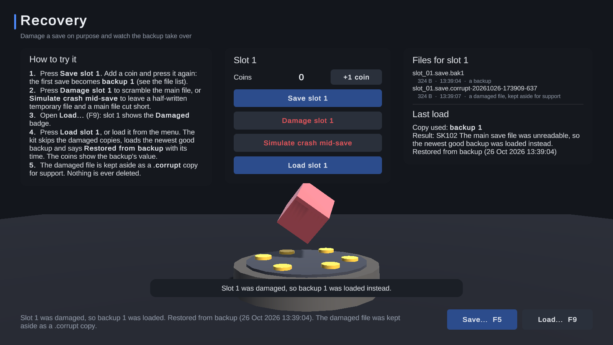

Walkthrough: backups and recovery
Power cuts, crashes during a save and full disks happen. This page shows what Shipready does about them, using the Recovery demo (Samples/Demos/Scenes/RecoveryDemo), which damages a save on purpose.
What you get without doing anything #
- Writes are crash-safe. A save is written to a temporary file first and swapped in only when it is complete, so a crash never leaves a half-written main file.
- Every save keeps older copies. With the default of 2, each save leaves
slot_01.save.bak1(the previous save) and.bak2(the one before) beside the main file. - Every file has a checksum, so damage is detected rather than loaded.
- A damaged save loads from its newest good copy by itself, and the damaged file is kept aside as a
.corruptcopy, never deleted.
Try it #
- Open the Recovery demo and press Play.
- Press Save slot 1, add a coin with +1 coin, and press Save slot 1 again. The first save is now the backup.
- Press Damage slot 1. It scrambles a few bytes in the main file, as a failing disk might. The file list marks it DAMAGED:

- Press Load slot 1, or load it from the Load menu (F9), where it shows a Damaged badge.

The load succeeds with the code RecoveredFromBackup (SK102) and says which copy it used and when that copy was saved. The coins show the backup's value. Simulate crash mid-save leaves a half-written temporary file and a cut-short main file instead; loading recovers from that too.
In your game #
- The player sees "Restored from backup (date)" in the save menu. A slot whose details come from a backup shows a Restored badge.
- Your code can listen for
SaveEvents.RecoveredFromBackupto tell the player, or to log it. - The Save Inspector shows each save's status (OK, Damaged, Wrong key, ...), lets you open any backup or the damaged copy as a tree, and has Restore backup to put the newest good copy back in place.
Choosing the settings #
On the settings asset's Advanced tab, Packing, encryption and backups:
- Older copies kept (0 to 5, default 2): more copies cost disk space, fewer give less to fall back on.
- Use a good copy by itself (on by default): off makes a damaged save fail its load and the menu offer Restore backup instead, so the player chooses.
- A save edited by hand: a readable save that no longer matches its checksum is treated as damaged (the default) or loaded with a warning. In the Editor, edited saves always load, so you can test by editing them.
When the disk is full #
A save that cannot be written fails with DiskFull (SK110) or AccessDenied (SK111), and every existing save stays exactly as it was. Nothing is ever deleted to make room.
More: Reliability and recovery in the Reference.